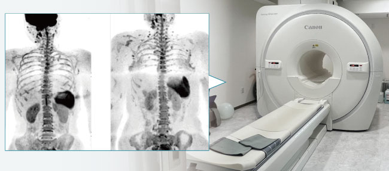
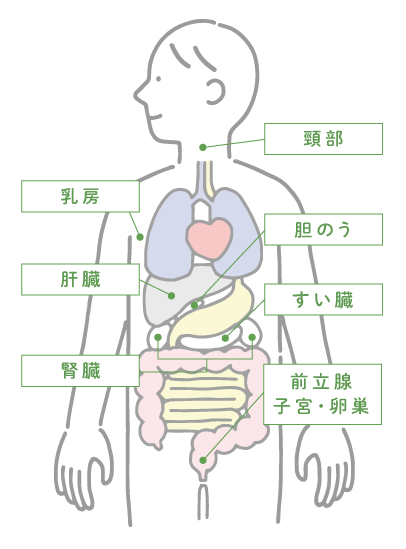
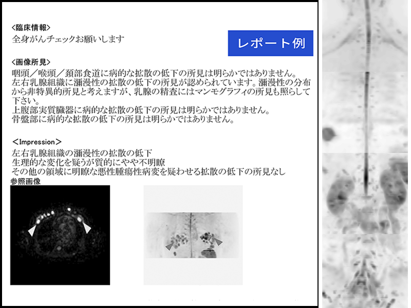

DWIBS検査
MRIを使った全身がん検査（DWIBS）

DWIBS検査は、MRIを使って全身（体幹部）のがんや炎症を光るように映し出す検査です。
従来のがん検査である「PET-CT」に近い情報が得られながら、放射線ゼロ・短時間・低負担という特徴があります。
がん（悪性腫瘍）の組織は通常の組織と比べて細胞と細胞の間が狭い（細胞密度が高い）ことに着目し、細胞と細胞の間の水の動きを画像化することによって病変を検出します。
がんの他、炎症のある部位、またリンパ節や脾臓など一部の正常臓器も描出されます。
当院では、整形外科診断のためにMRIを導入しましたが、さらに地域の皆様の健康づくりに貢献したいと考え、DWIBSを行うことに致しました。
| DWIBS検査 | 料 金： 29,800円 (税込) ※結果郵送料等を含みます |
|---|
DWIBSの特徴
- 放射線を使わないため、被ばくの心配がない
- 検査前の食事制限がない
- 検査前に薬剤（造影剤など）を使用することがない
- 糖尿病や腎不全などの持病がある方でも検査を受けられる
DWIBSでわかること
DWIBSは、体幹部（首の下から骨盤まで）のがん組織の検出が可能です。
予期せぬがんを発見するほか、がんの転移や治療効果の確認などに威力を発揮しています。
DWIBSで見つけやすいがんには以下のようなものがあります。

- 頚部：咽頭がん、甲状腺がん
- 胸部：乳がん
- 腹部：肝臓がん、胆のうがん、胆管がん、膵臓がん、大腸がん、婦人科系のがん（子宮がん、卵巣がんなど）、陰のうがん、尿路系のがん（腎がん・尿管がん・膀胱がん・前立腺がん）
- その他：悪性リンパ腫

DWIBS検査の流れ
-
- 01ご予約
- 事前にWEB予約をしてからご来院ください。
-
- 02問診・準備
- 金属類をすべて外し、検査着に着替えていただきます。
その後、検査の注意点をご説明いたします。
-
- 03MRIで撮影
- 約30～40分横になっているだけで撮影は終了します。
-
- 04結果郵送
- 結果レポート・CD-Rは、ご自宅にレターパックで郵送いたします。（7～10日程度かかります。）
DWIBSとPET-CTの比較
これまで全身のがんを調べる検査としてはPET-CTが主流でしたが、DWIBSはPET-CTと比較して検査費用も検査時間も少なく、身体的にも負担が少なく検査を受けることができます。
それぞれの検査に得意な部位・苦手な部位があるため、他の検査と上手に組み合わせて検査することがおすすめです。
| DWIBS | PET-CT | |
|---|---|---|
| 被ばく | なし | 注射薬と放射線の二重被ばく |
| 注射 | なし | あり（腫瘍を描出するための薬剤と造影剤） |
| 食事制限 | なし | あり |
| 検査時間 | 約30分 | 約3時間 |
| 検査後制限 | なし | 放射能が下がるまで待機 |
| 糖尿病患者 | 検査可能 | 検査できない場合がある |
| 検出が得意な部位 | 尿路系（腎臓、尿管、膀胱、前立腺など）のがん | 頭頸部がん、肺がん、食道がん |
| 検出が苦手な部位 | 胃がん、肺がん、食道がん | 胃がん、尿路系（腎臓、尿管、膀胱、前立腺など）のがん |
よくあるご質問
- 放射線被ばくはありますか？
- DWIBS検査ではMRIを使用します。
MRIは強い磁石と電波を用いて撮影するため、放射線被ばくは一切ありません。 - 痛みはありますか？
- 注射などはせず、横になっているだけで検査ができるため痛みはありません。
- どのくらいの時間がかかりますか？
- 撮影は30〜40分程度です。
- 健康診断の代わりになりますか？
- がんの早期発見に特化した検査として有効です。
DWIBSの注意事項
- 通常のMRI検査と同様、下記に当てはまる方は検査できません。
- MRI対応不可の金属（ペースメーカー、人工内耳など）等が体内にある方
- 閉所恐怖症の方
- 妊婦、または妊娠の可能性がある方
- 検査中（30〜40分間）静止していることが難しい方
- 全てのがんを見つけることはできません。不得意な分野の病変、小さい病変は検出できないことがあります。
- 発見された病変がすべてがんというわけではありません。本当にがんかどうかについては改めて精査が必要です。
| DWIBS検査 | 料 金： 29,800円 (税込) ※結果郵送料等を含みます |
|---|